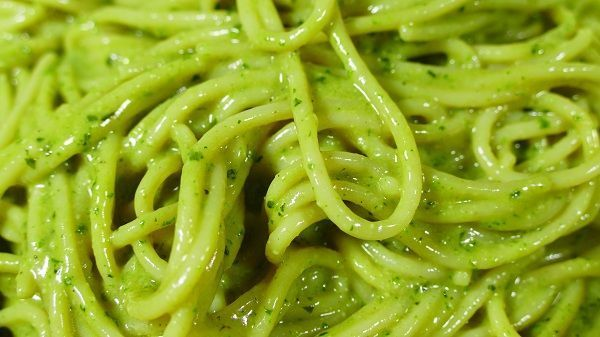

¿Que es este blog?
Este es un blog de cocicina en el cual te describimos diferentes platos de comida, postres y diferentes tipos de bebidas y tambien damos nuestras opiniones sobre que tan buenas son estas resetas.
Como la que mostraremos a continuacion
RECETAS CON PASTA:
Recetas de cocina faciles y rapidas de hacer con pasta también hay subidas. La pasta triunfa allá donde va. Y es muy fácil de preparar. Desde los populares espaguetis a la carbonara, la auténtica italiana, con huevo y queso hasta los espaguetis a la boloñesa. Una salsa hecha a base de tomate y carne, entre otros ingredientes. Otras variantes de espaguetis menos conocidas pero igual de buenas son los espaguetis al pesto. El pesto es una salsa con mucha personalidad hecha a base de albahaca y parmesano. Y lo que yo considero una de las mejores recetas con esta pasta de las que he probado. Los espaguetis en salsa de queso. Si te gusta la pasta o el queso (a quién no), ésta receta te encantará. Más recetas de cocina faciles y rapidas de hacer con otras pastas, son los macarrones gratinados con atún, macarrones con carne picada y tomate (todo un clásico) y los macarrones con bechamel y queso. Otra delicia.
